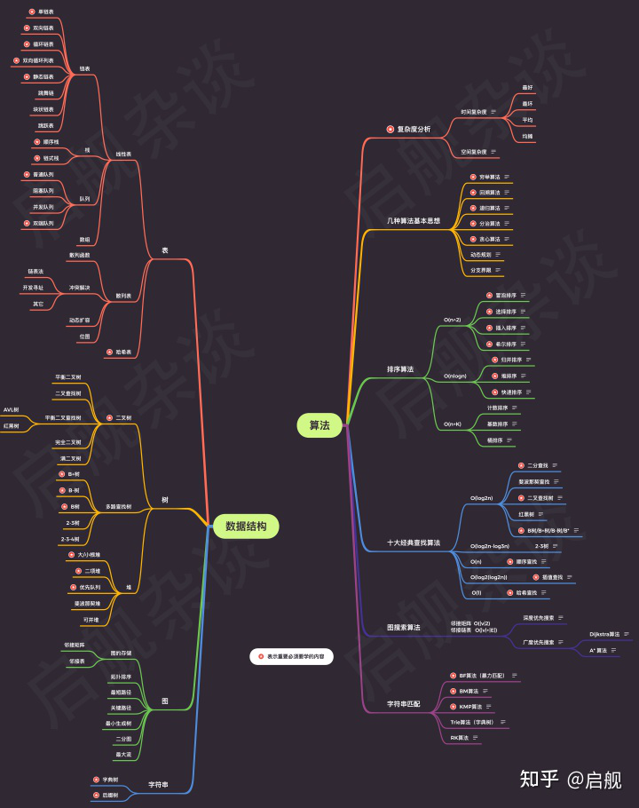
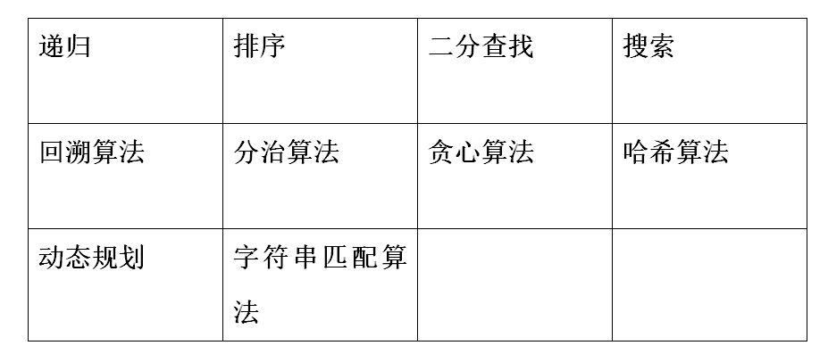
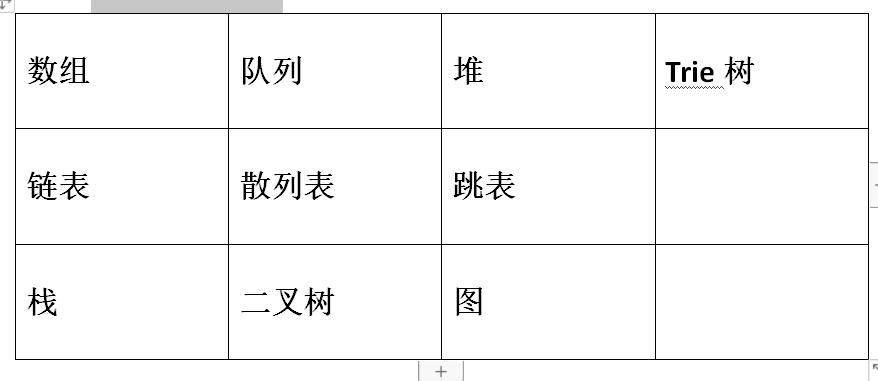

请按回车显示内容
数据结构主要讲解数据的组织形式，换句话说，我就是我们要怎样把这些数据存储起来，所以有列表、堆、栈、树、图，这是数据结构的重点。
而算法，则注重的是思想，比如列表里的元素怎么排序、怎么在当前的存储结构中找到最大的数和最小的数？等等，说白了就是解决现实中问题的思想。所以才会有分治思想、贪心思想、动态规划这些经典算法。
算法要高效实现，需要数据结构来配合。
算法的五个特性：输入、输出、有穷、确定和可行性
这个移动起来的过程是这样的:
从输入输出角度考虑，算法要对数据进行处理，不可避免的要用到对数据进行组织。需要处理的信息越复杂，处理过程越复杂，那么良好的数据组织就越重要，也就体现在数据结构的选取上了。
那么现在，让我们简要了解下算法分类吧！
接着，让我们了解下数据结构分类。
